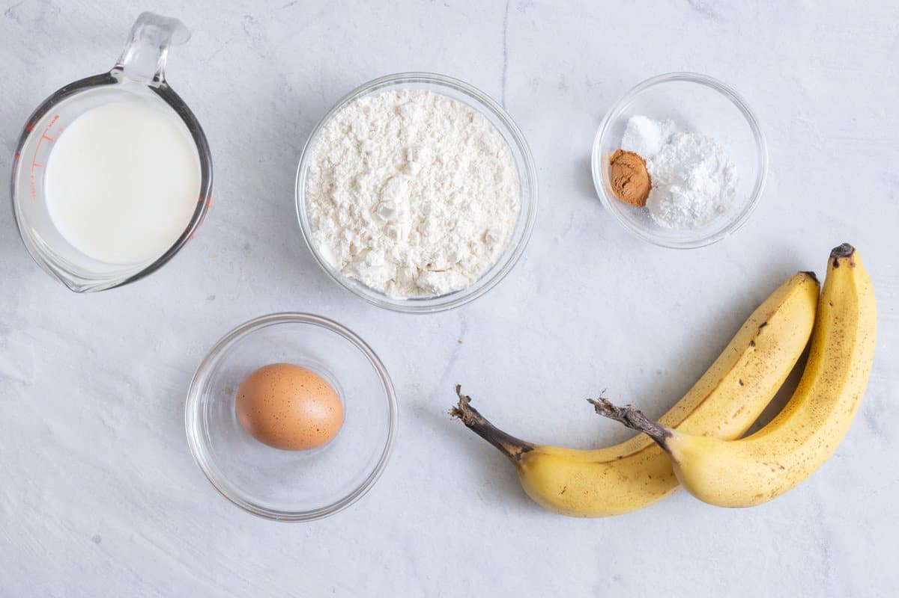
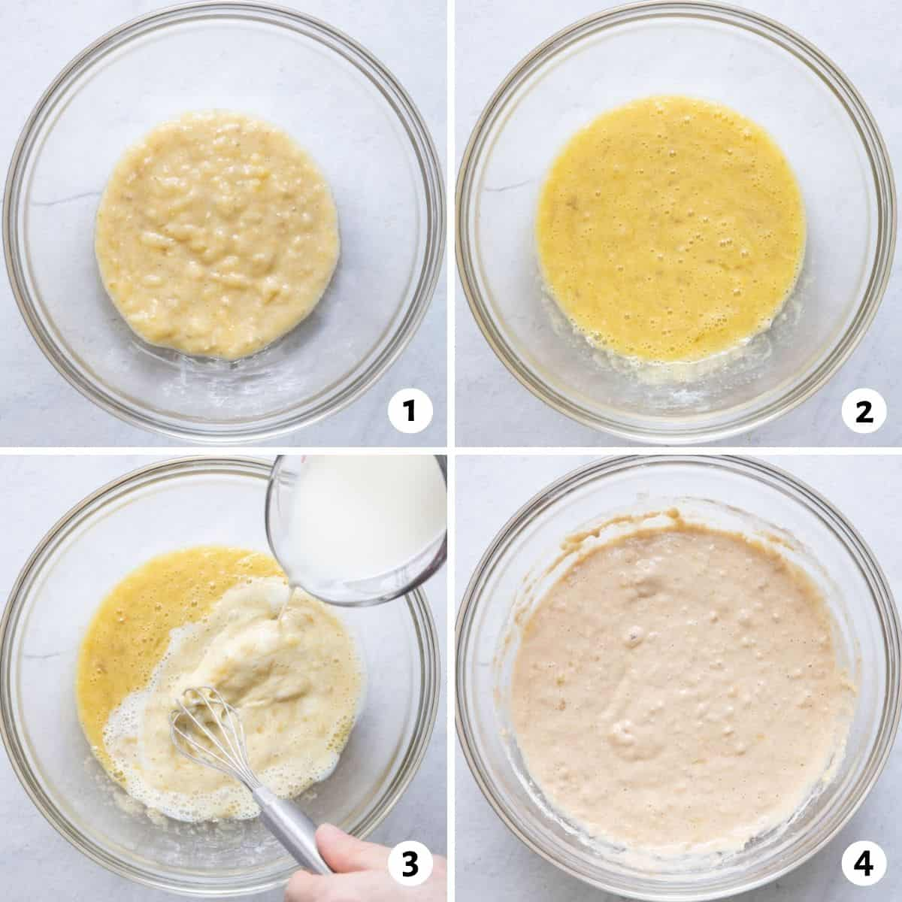

Estimated Time
- Prep Time: 5 mins
- Cook Time: 10 mins
Description: WHY YOU’LL LOVE THIS FLUFFY BANANA PANCAKES RECIPE
- Fluffy and moist: No one likes a dry pancake that’s dense and heavy. These
banana pancakes are
light, fluffy, and moist. They’re the perfect texture!
- Easy to make: This recipe is super simple and comes together in just a few
minutes. You don’t need
any fancy ingredients or gadget s – just a bowl, a whisk, and a frying pan!
- Full of flavor: These pancakes are subtly sweet, with a hint of banana and
cinnamon flavor. They’re
not too overwhelming, but they’re just right.
- The perfect breakfast (or dessert!): These pancakes make the perfect
breakfast or dessert. Serve
them up with some fresh fruit, syrup, and a dollop of whipped cream for a real treat!
- Great for meal prep: These pancakes freeze well, so they’re perfect for
meal prep. Make a batch on
the weekend and enjoy them all week long!


Equipments
- Mixing Bowls
- Ballon Whisk
- Nonstick Pan
- Measuring Cups and Spoons
Ingredients
Serving Size: 8 Pancakes
- 3/4 Bananas
- 1/2 Teaspoon Cinnamon
- 1 Cup All-purpose Flour
- 1 Large Egg
- 1 Tablespoon Baking Powder
- 1/4 Teaspone Salt
- 3/4 Cup of Milk
- Banana Slicies & Maple Syrup for serving

Instructions
- In a medium bowl, whisk together the flour, baking powder, cinnamon, and salt.
- In another, larger bowl, beat the banana and egg together until blended.
- Whisk in the milk until combined, then whisk in the dry ingredients. The batter will be
slightly lumpy.
- Heat a large nonstick pan over medium heat. Spray with nonstick cooking spray.
- Using a ⅓-cup measuring cup, pour 3-4 circles of batter into the pan.
- Cook until the pancakes are puffed on top and golden brown on the bottom, 2-3 minutes, then
flip and cook on the other side until risen and cooked through, 1-2 minutes more. Makes 8
pancakes.
- Serve with banana slices and maple syrup.

Storing Suggestions
- These pancakes are best served fresh, but if you have leftovers, they can be stored in an airtight
container in the fridge.
- Stored in an airtight container, these pancakes will last in the fridge for up to four days.
- Reheat them in the microwave for 30-60 seconds or in a pan over low heat until warmed throug